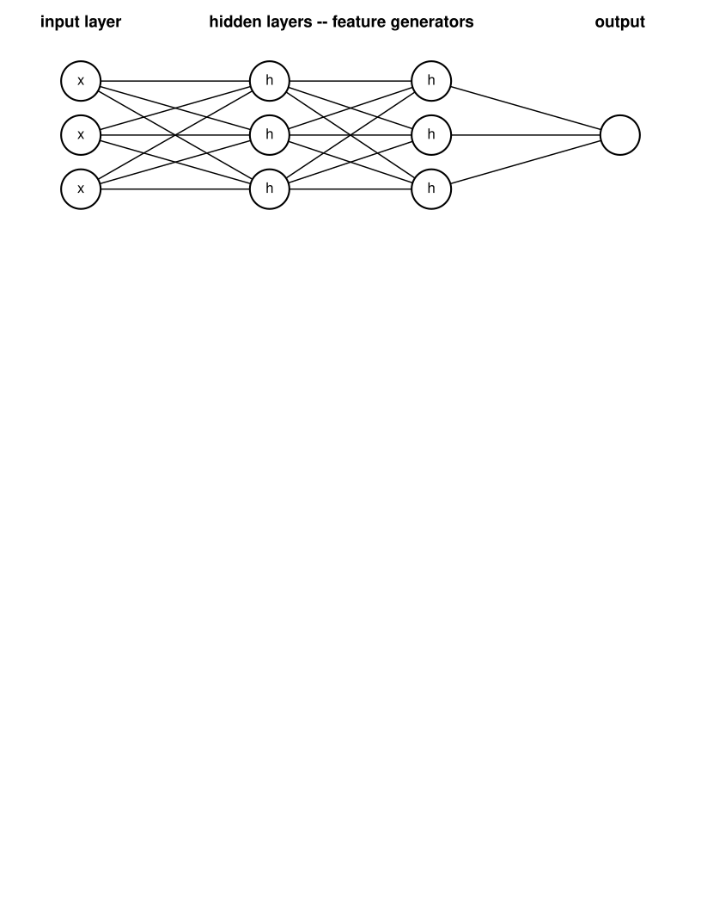
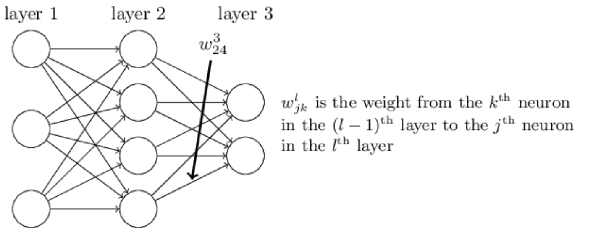
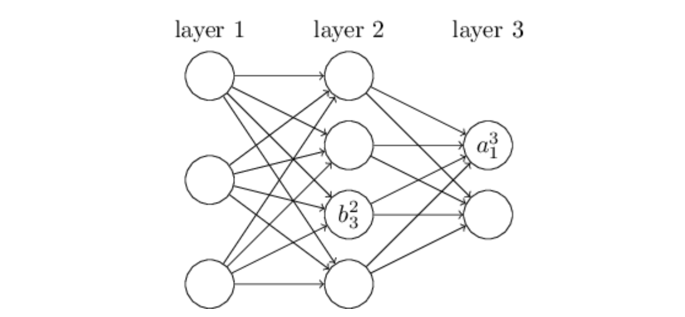
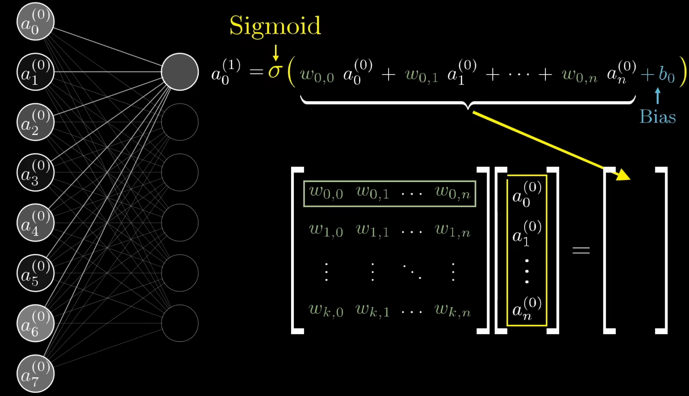

A NumPy-first walkthrough of neural-network math, mini-batch SGD, and backpropagation on MNIST.
Author
TimeAnalysis Team
Published
June 18, 2026
Goal and roadmap
We will learn the core math behind neural networks by solving a concrete task: teaching a computer to recognize handwritten digits from MNIST. Each image is 28 by 28 pixels, so the network receives 784 input numbers. It returns 10 output activations, one for each digit from 0 to 9.
The notebook follows this path:
define a single artificial neuron and the sigmoid activation;
stack neurons into a multilayer perceptron (MLP);
measure mistakes with a cost function;
minimize that cost with mini-batch stochastic gradient descent;
derive backpropagation, the algorithm that computes all gradients efficiently.
The implementation is intentionally small: no deep-learning framework, just NumPy and the chain rule.
This notebook is based on Michael Nielsen’s online book Neural Networks and Deep Learning, with extra connective explanation around notation, SGD, and backpropagation.
A single neuron: weighted sum plus sigmoid
A neuron first computes a weighted sum of its inputs and a bias,
\[
z = w \cdot x + b,
\]
and then passes that number through an activation function. Here we use the sigmoid
\[
\sigma(z) = \frac{1}{1 + e^{-z}}.
\]
The sigmoid maps any real value to the interval \((0, 1)\). Its derivative has a convenient form,
\[
\sigma'(z) = \sigma(z)(1 - \sigma(z)),
\]
which is one reason it is friendly for a first backpropagation implementation.
Code
import plotly.graph_objects as gofrom plotly.subplots import make_subplotsimport numpy as npfrom IPython.display import HTMLdef show_plot(fig: go.Figure, height: int=500) -> HTML:"""Render Plotly as saved HTML so Quarto can publish the output.""" fig.update_layout( height=height, margin={"l": 40, "r": 30, "t": 70, "b": 40}, )return HTML(fig.to_html(include_plotlyjs="cdn", full_html=False))x = np.linspace(-7, 7, 100)
Code
def sigmoid(x: np.ndarray):"""Get sigmoid function."""return1/ (1+ np.exp(-x))def sigmoid_prime(x: np.ndarray):"""Return the derivative of the sigmoid function."""return sigmoid(x) * (1- sigmoid(x))fig = make_subplots(rows=2, cols=1)fig.add_trace(go.Scatter(x=x, y=sigmoid(x), mode='lines', name='sigmoid'), row=1, col=1)fig.add_trace(go.Scatter(x=x, y=sigmoid_prime(x), mode='lines', name='prime'), row=2, col=1)fig.update_layout( title="Sigmoid and its derivative", width=900, height=600,)show_plot(fig)
From neurons to layers
A neural network is built by arranging neurons into layers. The leftmost layer is the input layer; for MNIST it contains 784 values, one per pixel. The rightmost layer is the output layer; here it contains 10 neurons, one per possible digit. Any layer between them is a hidden layer.
The word “hidden” does not mean mysterious. It only means that the desired labels do not directly tell us what those neurons should output; the network has to discover useful intermediate features during training.

neural network
The network above is a multilayer perceptron (MLP): a feed-forward network where every neuron in one layer is connected to every neuron in the next layer. “Feed-forward” means information moves left to right during prediction; there are no cycles or recurrent connections.
A layer-size tuple such as (784, 30, 10) means: 784 input values, one hidden layer with 30 neurons, and 10 output neurons.
Measuring mistakes with a cost function
Let \(a(x)\) be the network output for an input image \(x\), and let \(y(x)\) be the desired one-hot vector. For example, if the image is a 7, then the target vector has a 1 in position 7 and 0 everywhere else.
We define the mean squared error (also called the quadratic cost) as
where \(n\) is the number of training examples. The factor \(\frac{1}{2}\) is not essential; it just cancels the 2 that appears when differentiating the squared norm.
When \(C\) is small, the network’s outputs are close to the desired labels. Training means changing the weights \(w\) and biases \(b\) so that this cost becomes smaller.
Gradient descent update
For each parameter we move in the direction that decreases the cost most quickly:
Here \(\eta\) is the learning rate. If it is too small, learning is slow; if it is too large, the update can jump over good solutions or make training unstable.
Repeating this update is the basic “roll downhill” picture of gradient descent. The important practical question is how to compute the gradient.
Computing the exact gradient over the full training set after every tiny update is expensive, so neural networks usually use a cheaper approximation: mini-batch stochastic gradient descent.
Mini-batch stochastic gradient descent
Stochastic gradient descent randomly picks a small mini-batch of \(m\) training examples. Call them \(X_1, X_2, \ldots, X_m\). The average gradient on this mini-batch is used as an estimate of the full training-set gradient:
The update is therefore noisy, but much cheaper. That noise is often useful: it lets training make frequent progress and sometimes helps the optimizer avoid shallow bad regions.
In the code below, one epoch means one pass over the shuffled training data. Each mini-batch calls backprop once per example, accumulates the gradients, averages them, and applies the update.
Code
from tqdm import tqdm
Code
class Network(object):def__init__(self, sizes: tuple):"""Create a network object. :param sizes: Sizes of the corresponding layers. """self.num_layers =len(sizes)self.biases = [np.random.randn(y, 1) for y in sizes[1:]] # skip 0 layer, it is an input layerself.weights = [ np.random.randn(y, x)for x, y inzip(sizes[:-1], sizes[1:]) ]def feed_forward(self, input: np.array):"""Return the output of the network. :param input: input to the network """ output =inputfor b, w inzip(self.biases, self.weights): output = sigmoid(np.dot(w, output) + b)return outputdef SGD(self, training_data, epochs, mini_batch_size, learning_rate, test_data=None, ):"""Train the neural network using mini-batch stochastic gradient descent. :param training_data: List of pairs ``(x, y)``, where ``x`` is a training input and ``y`` is the desired output. :param epochs: Number of training epochs. :param mini_batch_size: Size of each mini-batch. :param learning_rate: Learning rate used during gradient descent. :param test_data: Optional test dataset used to evaluate the network after each epoch. """ training_data_size =len(training_data)if test_data isnotNone: test_data_size =len(test_data)for epoch_index inrange(epochs): np.random.shuffle(training_data) mini_batches = [ training_data[start_index: start_index + mini_batch_size]for start_index inrange(0, training_data_size, mini_batch_size) ]for mini_batch in mini_batches:self.update_mini_batch(mini_batch, learning_rate)if test_data isnotNone: correct_predictions =self.evaluate(test_data)print(f"Epoch {epoch_index}: {correct_predictions} / {test_data_size}")else:print(f"Epoch {epoch_index} complete")def update_mini_batch(self, mini_batch, eta):"""Update weights and biases by applying GD using backprop to a single mini batch. The "mini_batch" is a list of tuples "(x, y)", and "eta" is the learning rate. """ nabla_b = [np.zeros_like(b) for b inself.biases] nabla_w = [np.zeros_like(w) for w inself.weights]for x, y in mini_batch: delta_nabla_b, delta_nabla_w =self.backprop(x, y) nabla_b = [nb + dnb for nb, dnb inzip(nabla_b, delta_nabla_b)] nabla_w = [nw + dnw for nw, dnw inzip(nabla_w, delta_nabla_w)]self.weights = [ w - (eta /len(mini_batch)) * nw for w, nw inzip(self.weights, nabla_w) ]self.biases = [ b - (eta/len(mini_batch)) * nb for b, nb inzip(self.biases, nabla_b) ]def backprop(self, x, y):"""Return a tuple ``(nabla_b, nabla_w)`` representing the gradient for the cost function C_x. ``nabla_b`` and ``nabla_w`` are layer-by-layer lists of numpy arrays, similar to ``self.biases`` and ``self.weights``. """ nabla_b = [np.zeros(b.shape) for b inself.biases] nabla_w = [np.zeros(w.shape) for w inself.weights]# feedforward activation = x activations = [x] # list to store all the activations, layer by layer zs = [] # list to store all the z vectors, layer by layerfor b, w inzip(self.biases, self.weights): z = np.dot(w, activation) + b zs.append(z) activation = sigmoid(z) activations.append(activation)# backward pass delta =self.cost_derivative(activations[-1], y) *\ sigmoid_prime(zs[-1]) nabla_b[-1] = delta nabla_w[-1] = np.dot(delta, activations[-2].transpose())# Note that the variable l in the loop below is used a little# differently to the notation in Chapter 2 of the book. Here,# l = 1 means the last layer of neurons, l = 2 is the# second-last layer, and so on. It's a renumbering of the# scheme in the book, used here to take advantage of the fact# that Python can use negative indices in lists.for l inrange(2, self.num_layers): z = zs[-l] sp = sigmoid_prime(z) delta = np.dot(self.weights[-l+1].transpose(), delta) * sp nabla_b[-l] = delta nabla_w[-l] = np.dot(delta, activations[-l-1].transpose())return (nabla_b, nabla_w)def evaluate(self, test_data):"""Return the number of test inputs for which the neural network outputs the correct result. Note that the neural network's output is assumed to be the index of whichever neuron in the final layer has the highest activation.""" test_results = [ (np.argmax(self.feed_forward(x)), y)for (x, y) in test_data ]returnsum(int(x == y) for (x, y) in test_results)def cost_derivative(self, output_activations, y):"""Return the vector of partial derivatives partial C_x / partial a for the output activations."""return (output_activations - y)
The class stores one weight matrix for each pair of neighboring layers. If sizes = (784, 30, 10), then:
weights[0] has shape (30, 784) and connects the input layer to the hidden layer;
weights[1] has shape (10, 30) and connects the hidden layer to the output layer;
biases[0] has shape (30, 1) and biases[1] has shape (10, 1).
In mathematical notation, \(w^l_{jk}\) is the weight from neuron \(k\) in layer \(l-1\) to neuron \(j\) in layer \(l\). This row/column convention matches np.dot(w, activation) + b in feed_forward.
Code
from pathlib import Pathimport pickleimport numpy as npdef load_data(path: str| Path ="../data/mnist.pkl"):""" Load MNIST data from an unpacked pickle file. :param path: Path to the unpacked MNIST pickle file, usually ``mnist.pkl``. :return: Tuple ``(training_data, validation_data, test_data)``. """ path = Path(path)with path.open("rb") asfile: training_data, validation_data, test_data = pickle.load(file, encoding="latin1", )return training_data, validation_data, test_datadef load_data_wrapper(path: str| Path ="../data/mnist.pkl"):""" Load MNIST data and convert it to a format convenient for a neural network. :param path: Path to the unpacked MNIST pickle file. :return: Tuple ``(training_data, validation_data, test_data)``. ``training_data`` is a list of pairs ``(x, y)``, where: - ``x`` has shape ``(784, 1)`` - ``y`` has shape ``(10, 1)`` and is a one-hot vector ``validation_data`` and ``test_data`` are lists of pairs ``(x, y)``, where: - ``x`` has shape ``(784, 1)`` - ``y`` is an integer label from 0 to 9 """ training_raw, validation_raw, test_raw = load_data(path) training_inputs = [ np.reshape(image, (784, 1))for image in training_raw[0] ] training_labels = [ vectorized_result(label)for label in training_raw[1] ] training_data =list(zip(training_inputs, training_labels)) validation_inputs = [ np.reshape(image, (784, 1))for image in validation_raw[0] ] validation_data =list(zip(validation_inputs, validation_raw[1])) test_inputs = [ np.reshape(image, (784, 1))for image in test_raw[0] ] test_data =list(zip(test_inputs, test_raw[1]))return training_data, validation_data, test_datadef vectorized_result(label: int) -> np.ndarray:""" Convert a digit label to a one-hot column vector. :param label: Digit from 0 to 9. :return: A ``(10, 1)`` vector with 1.0 at the label position. """ result = np.zeros((10, 1)) result[label] =1.0return result
C:\Users\qweqw\AppData\Local\Temp\ipykernel_41244\2788249775.py:18: VisibleDeprecationWarning: dtype(): align should be passed as Python or NumPy boolean but got `align=0`. Did you mean to pass a tuple to create a subarray type? (Deprecated NumPy 2.4)
training_data, validation_data, test_data = pickle.load(
50000
Now train a model with one hidden layer of 30 neurons. This is not 30 hidden layers; the tuple (784, 30, 10) describes three layers total: input, hidden, and output.
net = Network([784, 100, 10])net.SGD(training_data, 30, 10, 3.0, test_data=test_data)
3%|▎ | 1/30 [00:19<09:27, 19.56s/it]
Epoch 0: 6624 / 10000
7%|▋ | 2/30 [00:41<09:40, 20.74s/it]
Epoch 1: 6791 / 10000
10%|█ | 3/30 [01:00<09:07, 20.27s/it]
Epoch 2: 8458 / 10000
13%|█▎ | 4/30 [01:22<09:04, 20.93s/it]
Epoch 3: 8527 / 10000
17%|█▋ | 5/30 [01:42<08:30, 20.40s/it]
Epoch 4: 8566 / 10000
20%|██ | 6/30 [02:01<08:02, 20.12s/it]
Epoch 5: 8608 / 10000
23%|██▎ | 7/30 [02:21<07:36, 19.84s/it]
Epoch 6: 8739 / 10000
27%|██▋ | 8/30 [02:41<07:18, 19.91s/it]
Epoch 7: 9565 / 10000
30%|███ | 9/30 [03:00<06:54, 19.75s/it]
Epoch 8: 9545 / 10000
33%|███▎ | 10/30 [03:20<06:35, 19.78s/it]
Epoch 9: 9574 / 10000
37%|███▋ | 11/30 [03:40<06:17, 19.86s/it]
Epoch 10: 9596 / 10000
40%|████ | 12/30 [04:00<05:57, 19.86s/it]
Epoch 11: 9592 / 10000
43%|████▎ | 13/30 [04:20<05:41, 20.11s/it]
Epoch 12: 9605 / 10000
47%|████▋ | 14/30 [04:41<05:24, 20.26s/it]
Epoch 13: 9629 / 10000
50%|█████ | 15/30 [05:02<05:05, 20.37s/it]
Epoch 14: 9622 / 10000
53%|█████▎ | 16/30 [05:22<04:45, 20.40s/it]
Epoch 15: 9625 / 10000
57%|█████▋ | 17/30 [05:42<04:22, 20.20s/it]
Epoch 16: 9618 / 10000
60%|██████ | 18/30 [06:02<04:00, 20.04s/it]
Epoch 17: 9615 / 10000
63%|██████▎ | 19/30 [06:21<03:39, 19.92s/it]
Epoch 18: 9633 / 10000
67%|██████▋ | 20/30 [06:41<03:17, 19.77s/it]
Epoch 19: 9634 / 10000
70%|███████ | 21/30 [07:00<02:57, 19.75s/it]
Epoch 20: 9634 / 10000
73%|███████▎ | 22/30 [07:20<02:38, 19.83s/it]
Epoch 21: 9637 / 10000
77%|███████▋ | 23/30 [07:40<02:18, 19.85s/it]
Epoch 22: 9633 / 10000
80%|████████ | 24/30 [08:02<02:01, 20.29s/it]
Epoch 23: 9632 / 10000
83%|████████▎ | 25/30 [08:22<01:41, 20.30s/it]
Epoch 24: 9634 / 10000
87%|████████▋ | 26/30 [08:41<01:20, 20.01s/it]
Epoch 25: 9629 / 10000
90%|█████████ | 27/30 [09:01<00:59, 19.94s/it]
Epoch 26: 9642 / 10000
93%|█████████▎| 28/30 [09:20<00:39, 19.77s/it]
Epoch 27: 9640 / 10000
97%|█████████▋| 29/30 [09:40<00:19, 19.61s/it]
Epoch 28: 9640 / 10000
100%|██████████| 30/30 [09:59<00:00, 19.99s/it]
Epoch 29: 9655 / 10000
Code
net = Network([784, 10])net.SGD(training_data, 30, 10, 3.0, test_data=test_data)
3%|▎ | 1/30 [00:03<01:39, 3.42s/it]
Epoch 0: 4293 / 10000
7%|▋ | 2/30 [00:05<01:08, 2.45s/it]
Epoch 1: 5679 / 10000
10%|█ | 3/30 [00:06<00:57, 2.12s/it]
Epoch 2: 5820 / 10000
13%|█▎ | 4/30 [00:08<00:51, 1.98s/it]
Epoch 3: 7404 / 10000
17%|█▋ | 5/30 [00:10<00:47, 1.90s/it]
Epoch 4: 7471 / 10000
20%|██ | 6/30 [00:12<00:44, 1.85s/it]
Epoch 5: 7492 / 10000
23%|██▎ | 7/30 [00:14<00:46, 2.02s/it]
Epoch 6: 7453 / 10000
27%|██▋ | 8/30 [00:16<00:42, 1.93s/it]
Epoch 7: 7503 / 10000
30%|███ | 9/30 [00:18<00:39, 1.88s/it]
Epoch 8: 7493 / 10000
33%|███▎ | 10/30 [00:19<00:36, 1.84s/it]
Epoch 9: 7547 / 10000
37%|███▋ | 11/30 [00:21<00:34, 1.81s/it]
Epoch 10: 8361 / 10000
40%|████ | 12/30 [00:23<00:32, 1.79s/it]
Epoch 11: 8379 / 10000
43%|████▎ | 13/30 [00:25<00:30, 1.78s/it]
Epoch 12: 8388 / 10000
47%|████▋ | 14/30 [00:26<00:28, 1.77s/it]
Epoch 13: 8382 / 10000
50%|█████ | 15/30 [00:28<00:26, 1.76s/it]
Epoch 14: 8382 / 10000
53%|█████▎ | 16/30 [00:30<00:24, 1.76s/it]
Epoch 15: 8408 / 10000
57%|█████▋ | 17/30 [00:32<00:22, 1.75s/it]
Epoch 16: 8389 / 10000
60%|██████ | 18/30 [00:33<00:21, 1.75s/it]
Epoch 17: 8392 / 10000
63%|██████▎ | 19/30 [00:35<00:19, 1.75s/it]
Epoch 18: 8398 / 10000
67%|██████▋ | 20/30 [00:37<00:17, 1.75s/it]
Epoch 19: 8364 / 10000
70%|███████ | 21/30 [00:39<00:15, 1.75s/it]
Epoch 20: 8406 / 10000
73%|███████▎ | 22/30 [00:40<00:14, 1.78s/it]
Epoch 21: 8389 / 10000
77%|███████▋ | 23/30 [00:42<00:12, 1.77s/it]
Epoch 22: 8405 / 10000
80%|████████ | 24/30 [00:44<00:10, 1.77s/it]
Epoch 23: 8397 / 10000
83%|████████▎ | 25/30 [00:46<00:08, 1.76s/it]
Epoch 24: 8387 / 10000
87%|████████▋ | 26/30 [00:47<00:07, 1.76s/it]
Epoch 25: 8403 / 10000
90%|█████████ | 27/30 [00:49<00:05, 1.76s/it]
Epoch 26: 8353 / 10000
93%|█████████▎| 28/30 [00:51<00:03, 1.75s/it]
Epoch 27: 8388 / 10000
97%|█████████▋| 29/30 [00:53<00:01, 1.75s/it]
Epoch 28: 8403 / 10000
100%|██████████| 30/30 [00:54<00:00, 1.83s/it]
Epoch 29: 8399 / 10000
Backpropagation: why it is needed
The Network class above calls backprop inside every mini-batch update. Backpropagation is the efficient way to compute the derivatives needed by gradient descent:
A naive approach would perturb one weight at a time and see how the cost changes. That would require a separate forward pass for every parameter. Backpropagation avoids this by reusing intermediate values from one forward pass and then applying the chain rule backward through the layers.
Historically, the idea appeared before the 1980s, but the 1986 paper by David Rumelhart, Geoffrey Hinton, and Ronald Williams made its practical importance much clearer. Today it is the standard engine behind neural-network training.
Layer notation
Number the layers from \(0\) to \(L\). Layer \(0\) is the input layer; layer \(L\) is the output layer.
We use \(w^l_{jk}\) for the weight from neuron \(k\) in layer \(l-1\) to neuron \(j\) in layer \(l\).

image.png
We use similar notation for biases and activations:
\(b^l_j\) is the bias of neuron \(j\) in layer \(l\);
\(a^l_j\) is the activation of neuron \(j\) in layer \(l\);
\(a^0\) is the input vector \(x\).
It is also useful to name the pre-activation value \(z^l_j\), the weighted input before the sigmoid is applied.

image.png
For a single neuron, the computation in layer \(l\) is
\[
z^l_j = \sum_k w^l_{jk} a^{l-1}_k + b^l_j,
\]
followed by
\[
a^l_j = \sigma(z^l_j).
\]
This is the same calculation performed in the feed_forward method.
In matrix form, \(w^l\) has shape (number of neurons in layer l, number of neurons in layer l-1). The vectors \(b^l\), \(z^l\), and \(a^l\) all have one row per neuron in layer \(l\).
This shape convention is why the forward step is written as a matrix-vector product: rows of \(w^l\) correspond to destination neurons, columns correspond to source neurons.
With that notation the whole layer is
\[
z^l = w^l a^{l-1} + b^l,
\]
and
\[
a^l = \sigma(z^l),
\]
where \(\sigma\) is applied element by element.
For one training example, the quadratic cost is
\[
C_x = \frac{1}{2}\lVert y - a^L \rVert^2.
\]
The full cost \(C\) is the average of \(C_x\) over the training set. Backpropagation computes gradients for one example, and mini-batch SGD averages those gradients across the mini-batch before updating the parameters.
This is not the raw prediction error \(y_j - a_j\). It measures how sensitive the cost is to the weighted input \(z^l_j\) of a neuron. We define the error with respect to \(z\) because every weight and bias affects the cost by first changing \(z\), then changing the activation, and only then changing the final cost.
The four backpropagation equations
Backpropagation is built around four equations. Here \(L\) is the final layer, and \(\odot\) means element-wise multiplication.
nabla_b[-1] = delta applies \(\nabla_{b^L} C = \delta^L\);
np.dot(delta, activations[-2].transpose()) applies \(\nabla_{w^L} C = \delta^L(a^{L-1})^T\);
the loop over l walks backward through earlier layers using self.weights[-l+1].transpose(), the code version of \((w^{l+1})^T\).
The negative indexes can look awkward at first, but they only mean “count layers from the end.” The math is the same as the equations above.
Why backpropagation is efficient
A network with architecture (784, 30, 10) already has \(30 \cdot 784 + 10 \cdot 30 = 23,820\) weights, plus 40 biases. Estimating each derivative separately would require tens of thousands of extra forward passes per training example.
Backpropagation computes all those derivatives with one forward pass and one backward pass. That is the core reason neural networks can be trained in practice.
Matrix multiplication note

image.png
In the weight matrix \(w\), each row contains all weights that feed into one neuron in the next layer. Multiplying \(w^l a^{l-1}\) computes every neuron’s weighted input for layer \(l\) at once.